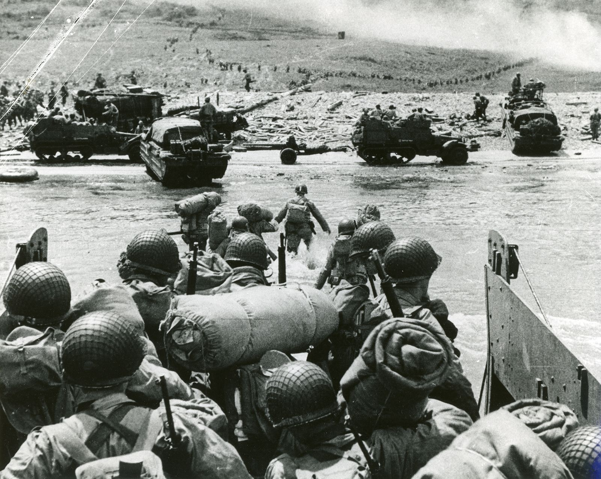
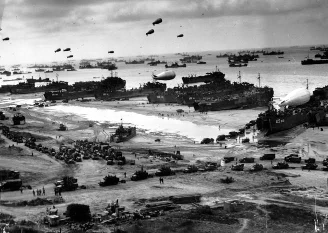

D-Day and the Normandy Landings
Launched on June 6, 1944, the Allied amphibious and airborne landings in Normandy opened a major Western Front in northwestern Europe and initiated the liberation of German-occupied Western Europe.
Coalition Planning, Deception, and the Atlantic Wall

Opening a major cross-Channel front in Western Europe required years of preparation, shipping assembly, industrial production, and coalition coordination. Soviet leaders had long urged Western Allies to establish a second front in Europe to draw German divisions away from the Eastern Front.
Under Supreme Allied Commander Dwight D. Eisenhower, planners built up forces in Britain while engineering specialized solutions for an assault across open water—including prefabricated Mulberry harbors and undersea fuel pipelines (PLUTO) to keep armies supplied before capturing a major undamaged port.
Along the coast, German forces constructed the Atlantic Wall: belts of beach obstacles, mines, barbed wire, trenches, artillery casemates, and strongpoints. Field Marshal Erwin Rommel worked to strengthen coastal obstacles and beaches in expectation of an Allied landing, while debate persisted within German command over how best to deploy armored reserves.
Deception was vital to misdirecting German reserves. Through Operation Bodyguard and Operation Fortitude, Allied intelligence used double agents, dummy installations, false radio traffic, and cover plans to keep German attention focused heavily on the Pas-de-Calais even as Normandy was chosen for its beaches and manageable reinforcement routes.
Weather nearly derailed the timetable. Rough seas and storm systems over the English Channel prompted Eisenhower to postpone the assault by twenty-four hours from June 5 to June 6 after meteorologist James Stagg advised of a brief break in severe weather.
Weeks of rehearsal and marshaling turned southern England into a staging ground of camps, depots, airfields, and ports. Every detail—from tide tables and beach gradients to vehicle waterproofing and supply priorities—had to be synchronized across American, British, Canadian, and Allied contingents before a single landing craft crossed the Channel.
Logistics touched nearly every part of the operation, from coordinating thousands of vessels and landing craft across narrow shipping lanes to keeping fuel, ammunition, and medical supplies moving steadily once the first waves reached shore.
Airborne units operating behind the coast disrupted communications, contested key road junctions, and helped prevent German formations from moving rapidly toward the beaches during the crucial opening hours of the invasion.
Airborne Drops and the Five Assault Beaches

The assault began after midnight on June 6 with large-scale British and American airborne drops behind the coastal defenses. Paratroopers and glider units sought to capture key road junctions, causeways, and river crossings to block German reinforcements and assist beach exits, though scattered drops and cloud cover separated many soldiers from their planned objectives.
Following heavy naval gunfire and air bombardment at dawn, amphibious forces landed across five designated beaches: Utah and Omaha in the American sector, and Gold, Juno, and Sword in the British and Canadian sector.
Conditions varied sharply across the landing zones. At Utah Beach, strong currents carried landing craft roughly a mile south of the planned point into an area with lighter defenses, enabling troops to get ashore and push inland faster than anticipated once initial obstacles were overcome.
At Omaha Beach, by contrast, steep bluffs, heavy surf, layered defenses, and the presence of an experienced German infantry division turned the morning assault into a hard, costly fight. Pinning down under intense fire along the beach, assault units gradually fought through draws and bluffs as naval destroyers fired close in support and small-unit attacks broke key strongpoints.
Clearing beach exits and linking up inland required sustained coordination between infantry, combat engineers demolishing obstacles, and armored vehicles moving off landing craft.
Once ashore, troops faced mines, wire, and defensive fire while trying to link beachheads and push inland. Engineers worked under fire to clear lanes for armor and supplies, while naval vessels and aircraft provided close support against coastal batteries and counterattacking infantry.
Naval gunfire support and air interdiction played critical roles once landings began along the coast. Destroyers and battleships fired directly at coastal batteries and fortified strongpoints when requested by beach commanders, while Allied fighter-bombers targeted German road movements and reinforcements trying to reach the Normandy front.
Hedgerow Fighting, Breakout, and Broader Impact

At Gold, Juno, and Sword, British and Canadian forces fought past coastal strongpoints and pushed inland toward objectives around Caen and Bayeux, encountering determined German armor and infantry counterattacks in the weeks that followed.
Establishing the beachhead was only the start of a grueling campaign in Normandy's bocage country, where earthen banks topped with thick hedgerows divided small fields and favored defenders against advancing armor.
Throughout June and July 1944, the Allies steadily built up troops, vehicles, and supplies while German forces faced Allied air supremacy, fuel constraints, and rigid command restrictions on tactical withdrawals.
In late July, Operation Cobra broke through German lines near Saint-Lô, leading to rapid mobile advances, the encirclement of large German formations around the Falaise pocket in August, and the liberation of Paris later that month.
Combined with major Soviet offensives in the east, the Normandy campaign placed Nazi Germany in an inescapable two-front war.
Sustaining momentum after the initial landings depended on continuous buildup over the beaches and temporary harbors until larger port facilities could be captured and cleared. As Allied forces broke out of Normandy in late summer 1944, rapid mobile advances liberated wide stretches of France and pressured German forces across Western Europe.
For Western Europe, the landings marked the beginning of sustained liberation from German occupation and set the operational pace for the Allied advance toward the German border.
Capturing deeper port facilities such as Cherbourg and building up supplies across the beaches remained essential to sustaining large armies through the summer campaign. As Allied forces pushed eastward across France and Belgium, the strategic initiative in Western Europe moved decisively toward the Allies.
Command coordination across air, naval, and ground headquarters tested Allied planning at every stage. Weather windows, tide heights, embarkation schedules, and reinforcement priorities had to stay aligned across thousands of vessels and aircraft while German defenders reacted to evolving intelligence on the coast.
Once the beachheads were linked and reinforced, Allied forces gained the depth needed to bring in armored divisions, artillery, and supplies at scale, turning a contested shoreline foothold into a sustained campaign across northwestern Europe.